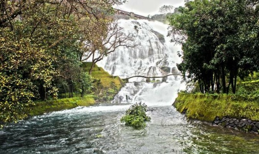
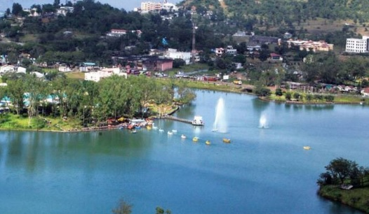

THINGS TO DO
Located on the banks of the Godavari River, the city of Nashik proves to be an ultimate destination to visit at least once in a lifetime. Let's look on some of the most wonderful places to enthral in NashikNASHIK KUMBHMELA
It's grand. It's legendary. Kumbh Mela celebrates festival of festivals! The massive event has its own story behind it. The meeting of Gods and demons was held so as to obtain 'amrit', the sweet nectar of immortality from the Milky Ocean. The collected nectar splashed over certain places where Kumbh Mela takes place. The most significant Kumbh called Poorna Kumbh is celebrated after every twelve years. Kumbh Mela caters to a massive conglomerate of saints and...

BHANDARDARA
Bhandardara surrounded by Deep Valley, Large Dam, Great Lake, Roaring Water Falls, Historical Fort and an Ancient Amruteshwar Temple is tourist paradise. Randha Fall cascading down from 45 meters is another gift of Mother Nature. The Amruteshwar Temple known for its beautiful carvings can be traced down 1200 years back in history and the Ratangad Fort is dear for mountaineering & trekkers is one of the favorite Forts of the great historical legendry son of soil Shree Chhatrapati Shivaji Maharaj (King).
Distance from Holiday : 66.6 km
Aprrox time to reach : 1 Hour 22 mins

NANDUR MADHMESHWAR
This sanctuary houses more than 220 species of birds, 400 species of vegetation, 24 species of fish and several smaller mammals came into existence along the Nandur Madhameshwar dam at the confluence of Godavari and Kadwa. Large lake & islands abound with aquatic vegetation making it paradise for thousands of migratory birds, Ibises, Storks & variety of colorful water birds. Lord Ram is said to have killed the golden deer or Suvarnamrug at the spot where the temple stands today.
Distance from Holiday : 52.3 km
Aprrox time to reach : 1 Hour 16 mins

WINE TOUR IN NASHIK
Nashik is known as wine capital of India. Wine tourism is the new buzzword in Nashik, around four hours from Mumbai. There are almost 50 wineries in and around Nashik, and excitingly for wine lovers, many Nashik vineyards now have tasting rooms that are open to the public. The vineyards fan out in all directions from Nashik though, so you'll need a car to reach them. Either that, or take a wine tour.
This guide uncovers Nashik vineyards that welcome visitors. They are situated in three different areas.
Gangapur Dam -14 Km, Time - 30 mins
Sanjegaon 25 km, Time - 45 mins
Dindori - 40 km, Time - 60 mins

SAPUTARA
This famous hill station equipped with adequate facilities is on the border of Maharashtra & Gujrat State. Different hill points for sunrise & a sunset makes this ideal tourist destination.
Distance from Holiday : 85.8 km
Aprrox time to reach : 1 Hour 32 mins
